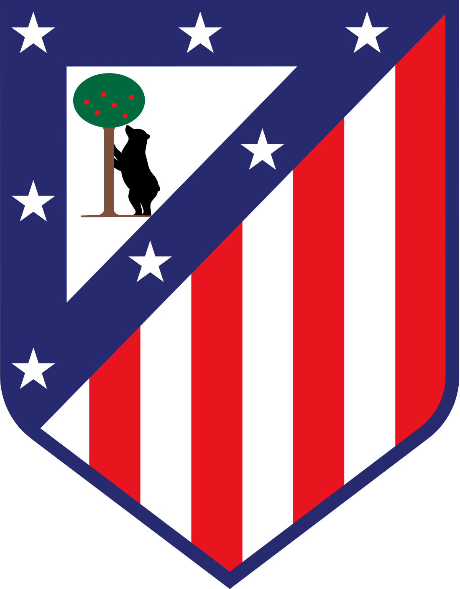

CourtManager Pro
Plataforma inteligente para la gestión integral de la utilería deportiva.
Propuesta de colaboración para Atleti Lab — Atlético de Madrid
info@ramondelpozorott.es · courtmanagerpro.vercel.app · v1.0
Confidencial · Atleti Lab
01